同济大学志愿者的一句“赤佬”，正引发着今年最大的解构狂欢
作者：情报姬 - 知乎
可能有读者注意到了，今天的所有社交媒体，都被红蓝色的抽象图案主宰。
然而诡异的是，你并不能从中读出什么含义。这些红色和蓝色并没有构成什么画面故事，他们当中的大多数也没有特别的美术造诣。
它们是这样的
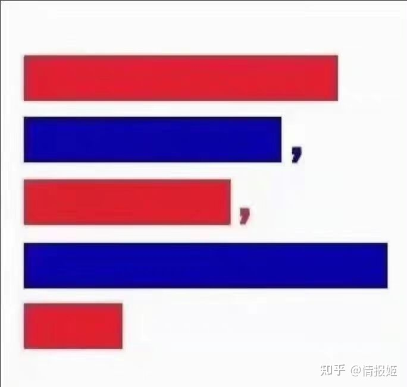
也可以是这样的
甚至还能再谜一点
它们风格各异，但都有着共同之处：由红色和蓝色的条形组成，且排列的顺序都为红、蓝、红、蓝、红，并且保持一定长度比率。
就好像某种密码，这些长短不一的红蓝色条，正传递着什么言语所不能形容的信息。理解其中奥妙的人，只要看到类似的颜色组合，就会会心一笑。
如果没有前情提要，你可能对这些图片根本无从解读。
而前情，就是下面这个图片。它比什么文字的叙述都更加易懂：
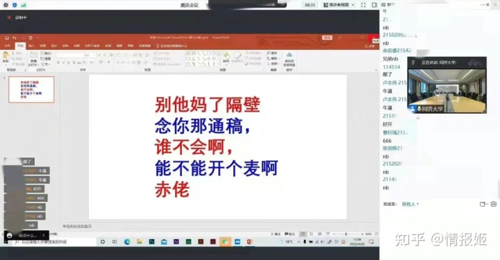
这是同济大学一位志愿者同学，在4月27日晚19点55分的临时开会上打下的字。
之所以打字，是因为这位同学想向校方反映问题，但被闭麦。
而他想反应的问题是什么，无从得知，但从最近同济的情况来看，可能并不是一两句话可以概括清楚的。
比如4月26日统一下发的猪肉里，混杂着大量的猪毛和猪乳头。
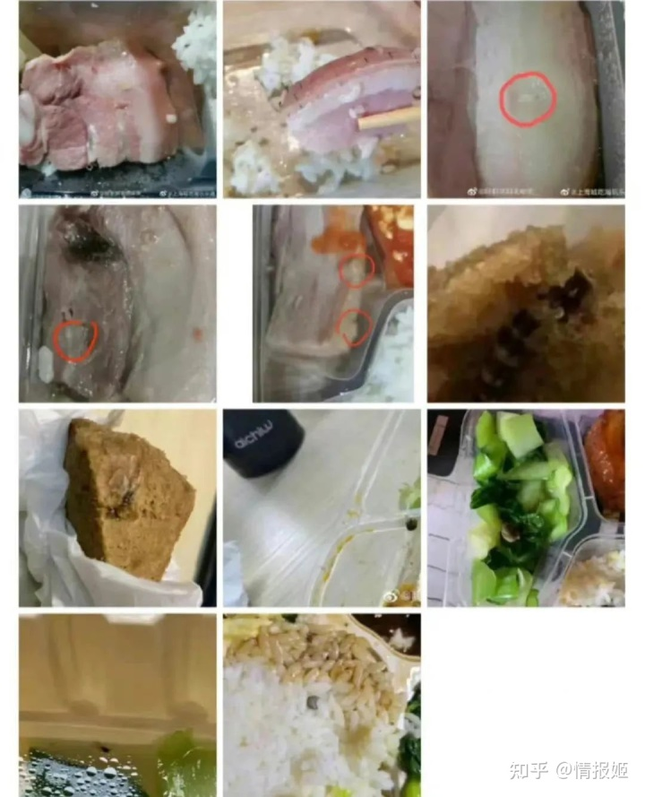
以及饭盒里出现的某些昆虫
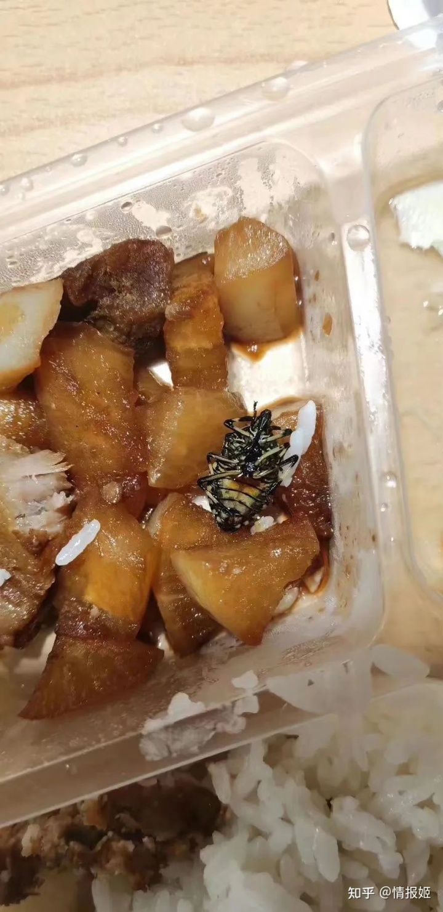
或者他的攻击性并没有想象中那么强，只是反映一下食材不新鲜，同学们吃完总是拉肚子的状况。
又或者是身处老校区的本科生们无法洗澡，上厕所需要排号请示后才能进入等生活难题。
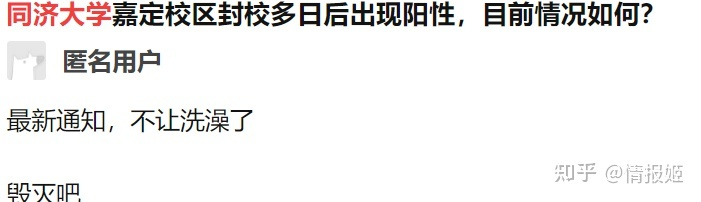
为什么不能确定是哪一条问题呢？因为此前无数问题和矛盾爆发的时候，校方都没有听取：同济大学的疫情发布会，主要环节就是校领导低头念稿，并不设置接听问题的阶段。
出现问题怎么办？校方采取的策略非常简单：直接搞定提出问题的所有同学，小到警告大到批评。
解决不了问题，解决一群涉世未深的学生还不简单嘛？
于是，在封校后，校内接连出现了新增病例，在高度封闭的学校为什么会出现这种问题，校领导没管。
在封校后，校内同学上厕所要按序，十数天不能洗澡，疫情期间，最需要干净卫生的时候，让学生在宿舍里被动养，严重影响学生的卫生安全，校领导也没管，哦不对，他们处分了提出问题的同学。
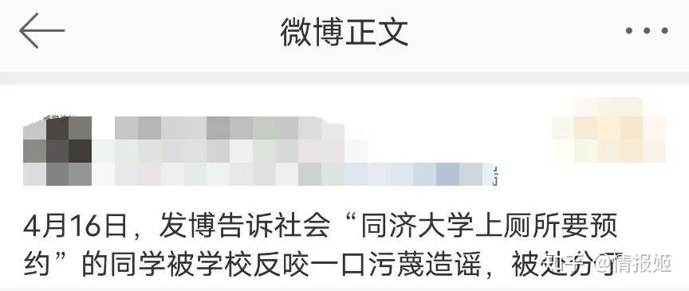
在封校后，食品种类和安全几乎一直存在隐患，我身处同济的同学跟我吐槽，已经蛮久没吃过什么好肉，而且吃了下发的保供食品闹肚子已经不是一次两次，联系前面上厕所需要报备的情况，很难说学校对学生没点断草除根的想法。
而学校背后的保障物资的供应商有两家，分别是上海璟年食品有限公司和上海新联食品有限公司，一个是曾经收到处罚，另一个只有一个人负责的皮包公司。
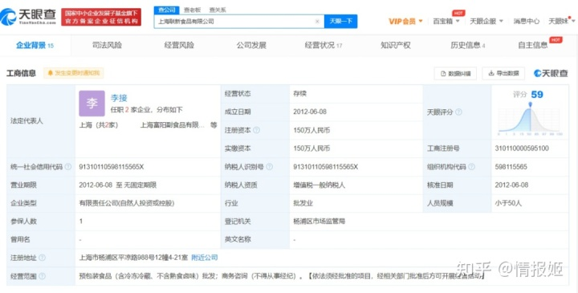
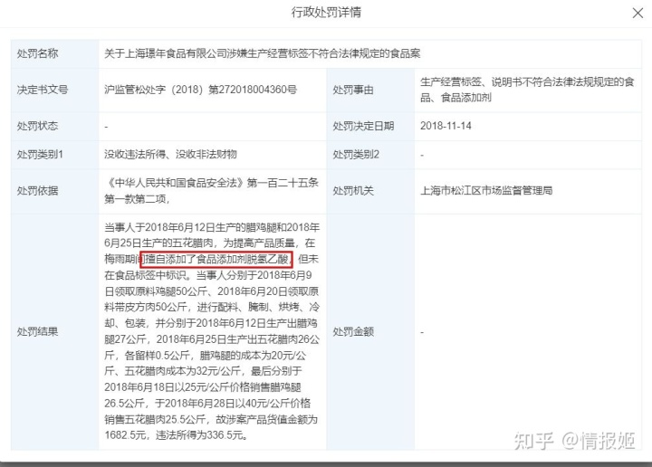
当然，负责和保供单位联系的上海高校后勤配货管理中心第一时间发了声明，把自己干干净净摘了出去，至于为什么会找这两家怎么看怎么有问题的供货商，以及为什么不多联系保供单位这些有些蹊跷的地方，也是不会提的。
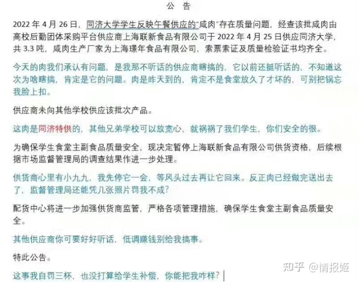
而这些事件就好比逐渐堆积的水位，终于压爆了学校言论封堵的堤坝。
于是就有了上面那一幕，有困难的人一次又一次被闭麦无法提出意见，而校领导们依旧冷漠而机械地宣读文件，一个本应该是解决问题的场合，诡异地变为清空异议宣示权力的窗口。于是一切言辞、愤怒、质疑、错乱就在沉默中变成刺眼的文字，并报复似地传播开。
种种不公和荒谬就是最好的助推器，在我写下这段文字不到一天的时间里，这些文字从内容到形式，都急速地传播在网络的每个角落。
而在同济校园内，这句话也彻底引爆了学生们对学校的不满，他们试图用一些能够被听到的方式，向校方传递自己的意见。比如播放音乐或者喊话，然后理所当然地被学校压制了：
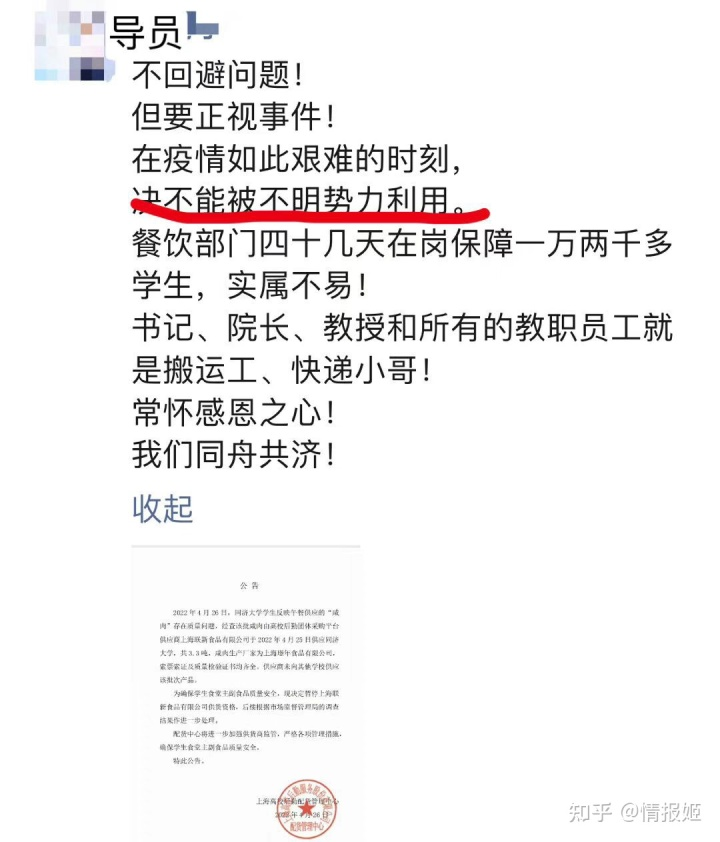
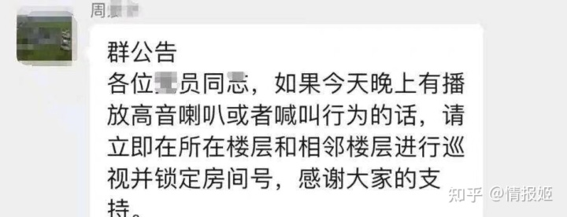
在学校之外，志愿者同学的那句话显然有更大的杀伤力，有的网友对他的文字内容进行变形和编码，形成密语：
有的网友从字数入手，将这一段掷地有声的话，概括成“65472”（每行的字数），然后从中演绎出新的密码。
当然，最广为流传的，还是这一段话的视觉效果，红色和蓝色好像携带上了学生们心里的愤懑，而禁言封口等措施又让网友们自发地以解构的方式对抗学校的权威。
言语可以封禁，言语的含义可以被关起来，那言语的形式呢？
学校可以封禁红色和蓝色吗？
可以封禁一切有长短的图形吗？
可以封禁数字乃至一切有形的符号吗？
可以封禁不甘、疑惑、委屈和愤怒吗？
这些为内容留出空白的形式，比那句“赤佬”更本质地刺痛了虚伪的权威。它比那句愤怒的话更长久地提示着校方的所作所为。
而解构这种形式，天然地具备抵抗消解权威的现实意义。
于是，最擅长解构这一行为的互联网用户，自发地把这种形式无限制地传播开：
（我玩塞尔达有问题吗？）
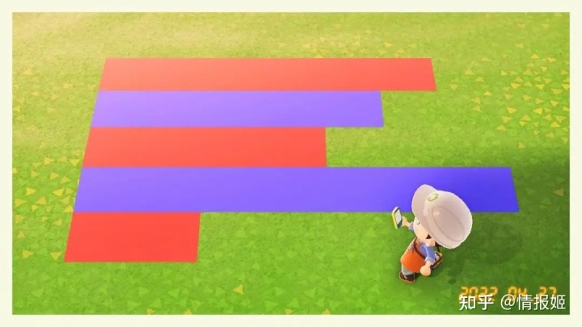
（玩动森呢？）
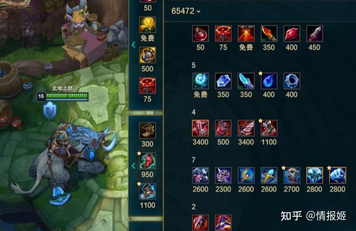
（买个装备行不行）
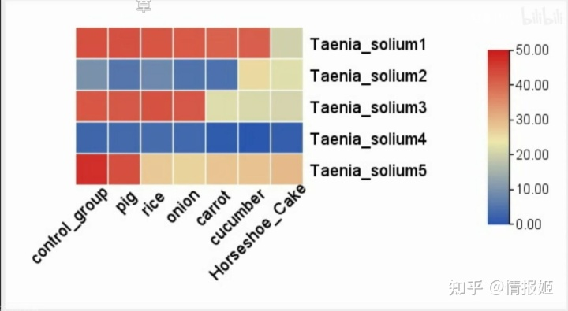
（画个数据图没问题吧）
甚至，同济大学的学生们，自发组织了自此为主题的设计比赛。
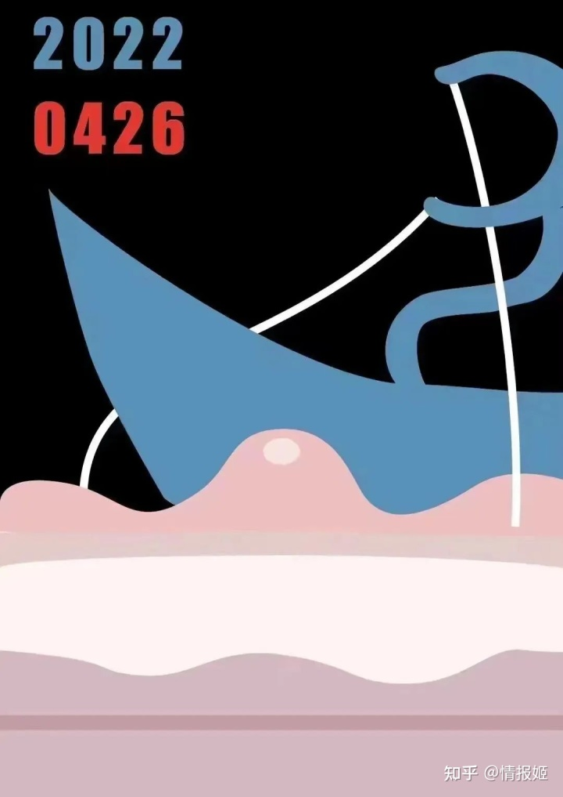
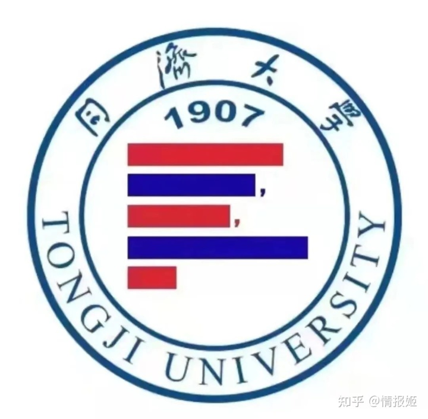
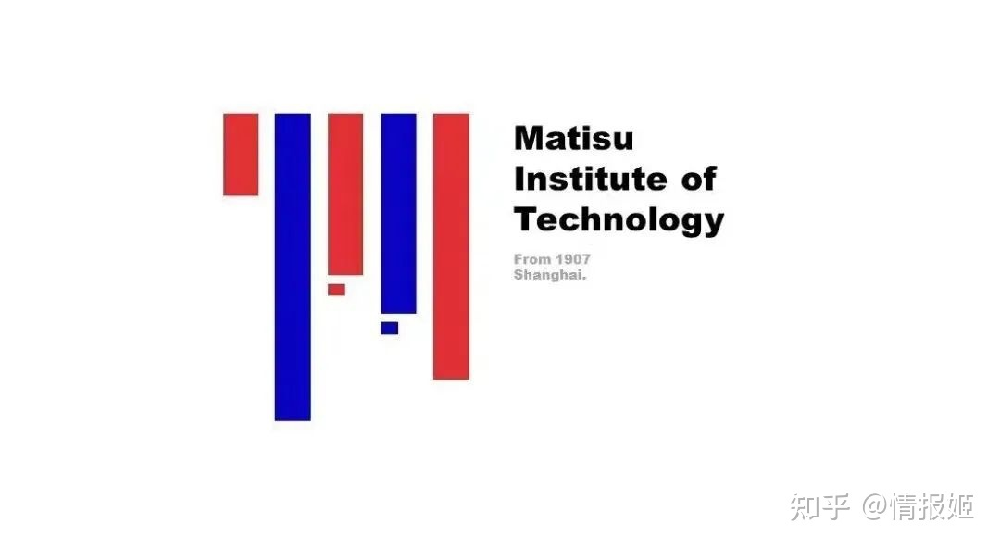
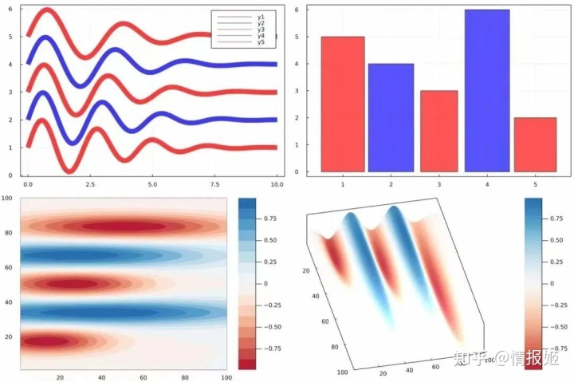
（分别来自海报区、LOGO区、跨文化交流区、学术区和创意区）
一些擅长美术和编程的同学，也用AI创作了一大批形式近似的画作，这些画作被命名为《Project：65472》
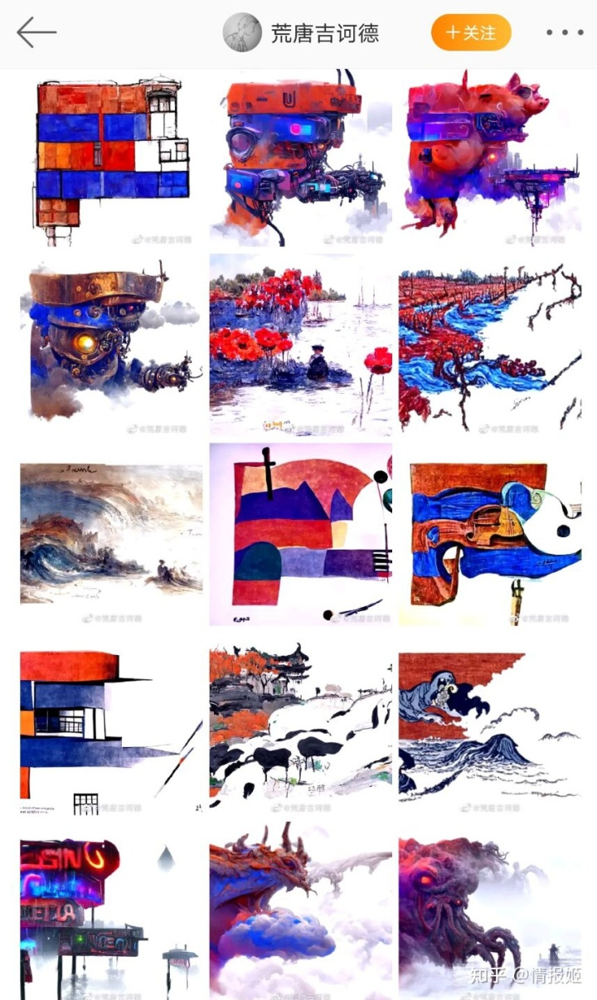
今天是4月28日，离五四青年节，还有六天。上海现在的疫情依旧糟糕，六天后同济大学的学生们，应该依旧无法外出。但我听一位在同济的朋友说，今天的伙食已经比之前稍好，有了牛肉，或许事情的转机可以从这此开始。只是目前关于那位愤起执言的学生什么情况，还没有确切的消息。
学生们进入大学校园，必然都是带着对未来的憧憬，这些憧憬或许并不清晰，但大都包含了一些不言自明的美德和公理，比如公平，比如透明，比如同舟共济，比如学校不是学生的主人而是学生的帮手。
而就在我敲下这篇文字的时候，同济大学发布了调查结果：
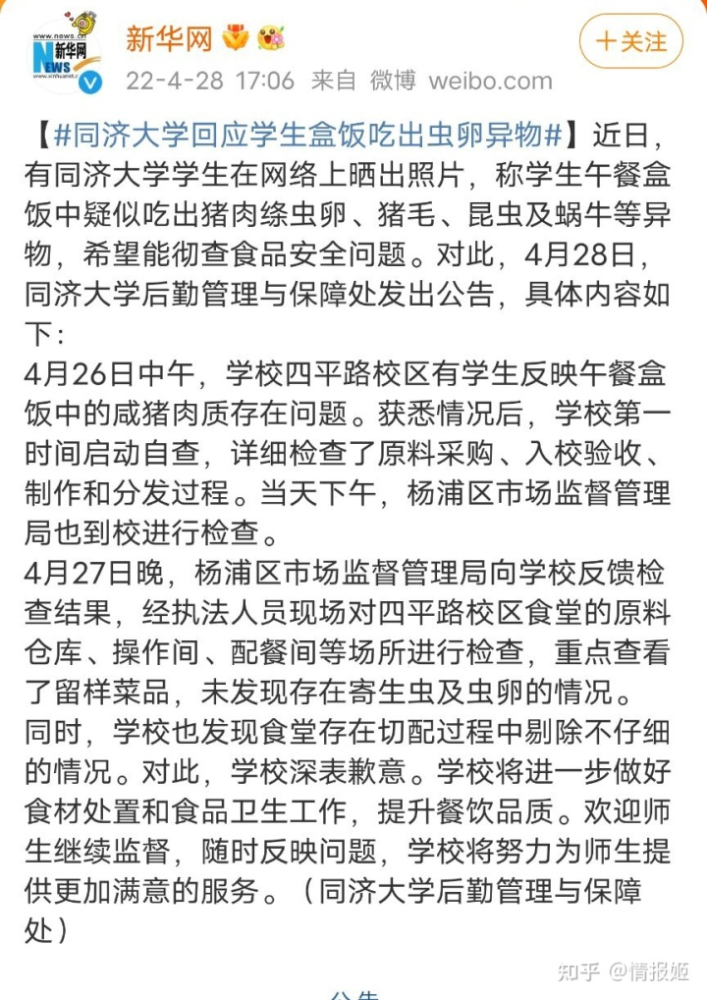
概括一下就是“找人查了样本没问题，你们吃的猪肉有问题我管不着，但是别给我别没事找事了。”
可能同济这些十几岁的学生，比同济本身要更清楚一个好大学应该有的样子吧。